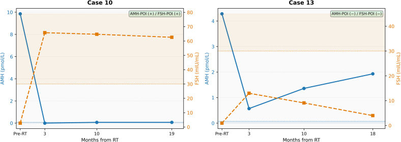
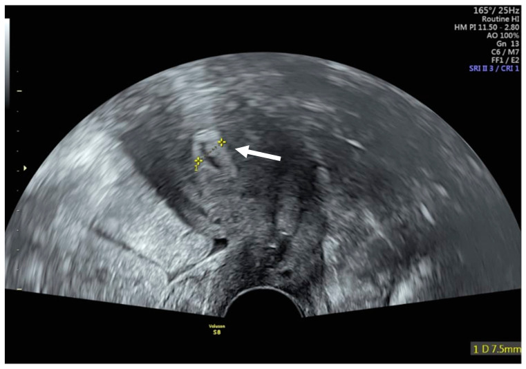
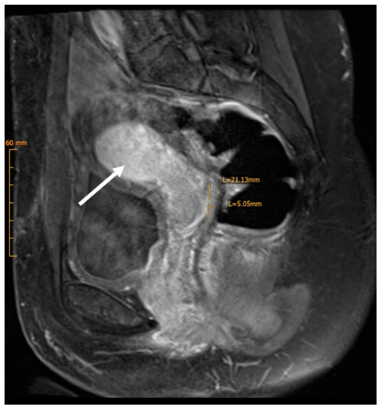

1609 — Suy buồng trứng & thiếu hụt hormone sau xạ trị phụ khoa: AMH/FSH, HRT, xương–tim / Radiation-induced ovarian insufficiency and hormone deficiency after pelvic radiotherapy
Tags: pattern:suy-buong-trung pattern:buong-trung-teo pattern:mat-xuong pattern:thieu-hut-hormone vung:buong-trung vung:tu-cung vung:tieu-khung score:AMH score:FRAX protocol:TVUS protocol:MRI-chau protocol:DXA
Mức chắc chắn (certainty): tổng hợp y văn (literature synthesis) — ESHRE 2024 (PMC11631070), tổng quan mãn kinh sau điều trị ung thư 2026 (PMC13663626), đoàn hệ AMH sau xạ 2026 (PMC13320243) + 1 ca nguyên văn minh họa (PMC12941671).
Câu chốt của bài: sau xạ tiểu khung, buồng trứng teo nhỏ – không nang – tín hiệu T2 thấp là hậu quả mong đợi, KHÔNG phải tái phát. Chẩn đoán suy buồng trứng sớm (premature ovarian insufficiency — POI) là chẩn đoán nội tiết (FSH > 25 IU/L + vô kinh ≥ 4 tháng, hoặc AMH không phát hiện được), không phải chẩn đoán hình ảnh. Hình ảnh có 3 việc: (1) đếm/đo dự trữ trước và sau xạ, (2) loại trừ khối tái phát/di căn buồng trứng, (3) đánh giá tử cung trước khi dùng hormone và mật độ xương bằng DXA. Điều trị thiếu hụt hormone phải đủ liều (≥ 2 mg estradiol uống hoặc 100 µg dán/ngày), không phải "liều thấp cho nhẹ".
1. Tổng quan bệnh học – cơ chế hình ảnh
- Vì sao buồng trứng nhạy xạ nhất: noãn nằm trong nang nguyên thủy (primordial follicle), không tái sinh. Xạ gây apoptosis tế bào hạt và noãn + tổn thương mạch máu stroma → xơ hóa. Ngưỡng kinh điển (Wallace 2005, dẫn qua PMC13103583): ở nữ < 40 tuổi, liều < 2 Gy đã làm mất 50% noãn (LD50 < 2 Gy); 14 Gy gây suy buồng trứng hoàn toàn. Ở tuổi lớn hơn, ngưỡng gây suy buồng trứng thấp hơn nhiều vì dự trữ đã ít.
- Thời gian: xạ tiểu khung có thể gây mãn kinh trong 6 tháng đầu (Viswanathan 2014, dẫn qua PMC13663626); xạ toàn thân (TBI) → suy buồng trứng 90% trong theo dõi dài. Đây là lý do không được trấn an "chờ vài năm xem sao" ở người muốn sinh con.
- AMH rơi trước, FSH tăng sau: AMH do tế bào hạt của nang tiền hốc và nang hốc nhỏ tiết ra, phản ánh số nang còn lại; FSH tăng do mất feedback buồng trứng. Trong đoàn hệ 23 bệnh nhân ≤ 45 tuổi sau xạ tiểu khung: POI theo AMH 39,1%, theo FSH 34,8%; AMH giảm sớm, có thể hồi phục giữa 6–10 tháng và thường hồi phục trước FSH (PMC13320243). Vì vậy một AMH thấp ngay sau xạ chưa phải kết luận vĩnh viễn — nhưng cũng không được chờ nếu bệnh nhân còn nhu cầu sinh sản (trữ noãn/phôi phải làm trước).
- Định nghĩa POI (thay đổi qua các phiên bản):
- ESHRE 2016: vô kinh/thiểu kinh ≥ 4 tháng + FSH > 25 IU/L ở 2 lần cách nhau > 4 tuần, tuổi < 40.
- ESHRE 2024 (PMC11631070): chỉ cần một lần FSH > 25 IU/L để chẩn đoán; khi không chắc chắn thì lặp FSH và/hoặc làm AMH. Đây là thay đổi thực hành quan trọng — đừng chờ lần xét nghiệm thứ hai mới bắt đầu tư vấn.
- TẠI SAO hình ảnh thay đổi (vật lý):
- Siêu âm đầu dò âm đạo (transvaginal ultrasound — TVUS): buồng trứng sau xạ nhỏ, không thấy nang 2–10 mm, stroma giảm âm; đếm nang hốc (antral follicle count — AFC) là số đo dự trữ. Nội mạc tử cung mỏng (thường ≤ 4–5 mm khi không dùng hormone) do thiếu estrogen; tử cung có thể teo, cổ tử cung hẹp sau xạ.
- MRI: mô xơ sau xạ giàu collagen, ít nước → T2 thấp; tử cung mất vùng chuyển tiếp (junctional zone) rõ, cơ tử cung T2 thấp lan tỏa, nội mạc mỏng. Buồng trứng teo T2 trung–thấp, không nang. Đây là hình thái xơ hóa, không phải mô u.
- DWI/ADC: mô xơ xạ có thể hạn chế khuếch tán nhẹ, còn u sống ADC thấp hơn rõ; nhưng viêm/tái tạo mô trong 6–12 tháng đầu cũng làm ADC thấp → không đọc DWI đơn độc (xem bài 582, 577).
- DXA: đo mật độ xương (bone mineral density — BMD) tại cột sống thắt lưng và cổ xương đùi; mất estrogen → mất xương nhanh trong 1–2 năm đầu, sau đó chậm lại.
- Gánh nặng lâu dài (định lượng): sau mãn kinh sớm/ngoại khoa, loãng xương 8–14%, thiếu xương 23–57%; mãn kinh < 40 tuổi tăng nguy cơ gãy xương HR 1,21 (KTC 95% 1,02–1,44); người sống sót ung thư có nguy cơ gãy xương dư 10–30%. POI tăng nguy cơ tim mạch HR 1,55, tăng đột quỵ HR 1,22 và biến cố tim mạch HR 1,37 (PMC13663626). Đây là lý do HRT ở POI là điều trị bệnh, không chỉ "giảm bốc hỏa".
2. Mẫu hình + chẩn đoán phân biệt theo bối cảnh (Gamut)
- Khuôn 1 — vô kinh + bốc hỏa sau xạ tiểu khung: POI do xạ (FSH cao, AMH thấp, buồng trứng teo) vs suy buồng trứng do hóa chất alkyl hóa (bệnh sử, có thể hồi phục) vs mãn kinh tự nhiên sớm (tuổi, FSH tăng từ từ) vs GnRH agonist (thuốc ức chế, FSH thấp, hồi phục sau ngừng 1–3 tháng) vs suy giáp/tăng prolactin (TSH, prolactin).
- Khuôn 2 — buồng trứng nhỏ/không thấy trên hình ảnh: teo sinh lý sau xạ/mãn kinh vs buồng trứng đã cắt (bệnh sử) vs buồng trứng chuyển vị ra ngoài tiểu khung (vị trí bất thường + clip — xem bài 1607) vs dải sinh dục (streak gonad) bẩm sinh (Turner) vs buồng trứng bị u/di căn thay thế (to ra, thành phần đặc — dấu hiệu báo động).
- Khuôn 3 — đau/ra máu sau xạ: teo niêm mạc + viêm xạ vs tái phát tại chỗ (khối, DWI sáng, ngấm thuốc) vs ứ máu trong buồng tử cung do hẹp cổ tử cung (hematometra) vs viêm bàng quang/trực tràng xạ (bài 582) vs ung thư niệu mạc thứ phát (bài 1608).
- Khuôn 4 — đau xương sau xạ: loãng xương do thiếu estrogen (mất xương lan tỏa, không khối) vs gãy xương suy yếu sau xạ (đường gãy, phù tủy, không phá vỡ vỏ) vs di căn xương (phá vỡ vỏ, khối mô mềm — bài 581).
- Gamut theo thời điểm sau xạ: < 3 tháng** — thay đổi cấp (phù, viêm), **không kết luận POI vĩnh viễn**; **3–12 tháng** — AMH/FSH biến động, có thể hồi phục; **> 12 tháng — teo/xơ ổn định, nguy cơ mất xương và tim mạch tích lũy.
3. Bảng so sánh phân biệt (ma trận đối chiếu)
| Thực thể (entity) | Hình ảnh / xét nghiệm điển hình | Chốt vào (rule-in) | Chốt loại (rule-out) | Gợi ý xác nhận |
|---|---|---|---|---|
| POI do xạ | Buồng trứng nhỏ, không nang; nội mạc ≤ 4–5 mm; FSH > 25 IU/L, AMH thấp/không phát hiện; vô kinh ≥ 4 tháng | FSH > 25 IU/L + vô kinh ≥ 4 tháng + tiền sử xạ tiểu khung | FSH thấp + đang dùng GnRH agonist → do thuốc, không phải POI | FSH lặp lại (nếu chưa chắc), AMH, TVUS |
| Suy buồng trứng do hóa chất | Buồng trứng nhỏ, AMH thấp; có thể hồi phục sau 6–12 tháng, nhất là tuổi trẻ | Tiền sử alkyl hóa (cyclophosphamide) + AMH/FSH thay đổi theo đợt | Xạ tiểu khung là nguyên nhân trội → nghĩ xạ | Hỏi phác đồ, AMH chuỗi |
| Mãn kinh tự nhiên sớm | Buồng trứng nhỏ dần theo tuổi; FSH tăng từ từ; không tiền sử xạ/hóa | Tuổi gần 45–55 + FSH tăng dần + không can thiệp | Xạ tiểu khung trong 5 năm → nghĩ do xạ | Bệnh sử, FSH chuỗi |
| GnRH agonist (ức chế buồng trứng) | FSH thấp, LH thấp, estradiol thấp; buồng trứng không nang; hồi phục sau ngừng thuốc | Đang tiêm GnRH agonist + FSH thấp | FSH cao > 25 → không phải do thuốc | Ngừng thuốc 1–3 tháng, xét nghiệm lại |
| Buồng trứng chuyển vị (bình thường) | Nốt mô mềm ở rãnh cạnh đại tràng/thành bụng, clip, kích thước đổi theo chu kỳ | Clip + vị trí ngoài tiểu khung + thay đổi theo chu kỳ | Không clip, bờ không đều, to nhanh → nghi tái phát | So phim, TVUS (bài 1607) |
| Di căn/tái phát buồng trứng | Buồng trứng to ra, thành phần đặc, ngấm mạnh, DWI sáng/ADC thấp, có thể có hạch/dịch | Khối đặc mới/to nhanh + ADC thấp + FDG dương | Buồng trứng nhỏ, không nang, ổn định nhiều năm → teo | MRI chậu + PET/CT khi nghi, sinh thiết/cắt |
| Loãng xương do thiếu estrogen | DXA: T-score ≤ −2,5 (hoặc Z ≤ −2,0 ở người tiền mãn kinh); mất xương lan tỏa, không khối | DXA thấp + không khối/không phá vỡ vỏ | Phá vỡ vỏ + khối mô mềm → di căn | DXA, CT/MRI xương khi đau khu trú |
| Gãy xương suy yếu sau xạ | Đường gãy ngang, phù tủy đối xứng, không khối mô mềm; vùng xương cùng/khung chậu | Đường gãy + phù tủy đối xứng + đúng vùng xạ | Phá vỡ vỏ + khối → di căn | CT xương, MRI; xem bài 581 |

Trái (ca 10): AMH rơi về 0 và FSH tăng > 50 mIU/mL → POI đồng thuận. Phải (ca 13): AMH rơi còn ~0,5 pmol/L rồi hồi phục lên ~2 pmol/L, FSH tăng thoáng qua rồi về bình thường → AMH và FSH không đồng thuận; không được kết luận vĩnh viễn chỉ từ một điểm. Đường chấm: ngưỡng AMH không phát hiện được và FSH 30 mIU/mL. Nguồn: Song Y et al., Gynecol Oncol Rep 2026 (PMC13320243), CC BY-NC-ND 4.0 (giữ nguyên bản).4. Protocol chụp + hệ phân độ/điểm chuẩn hóa
- Trước xạ (baseline, trong 1–2 tuần):
- TVUS: đếm AFC hai bên (nang 2–10 mm), đo thể tích buồng trứng; ghi nhận u/nang bất thường; đánh giá tử cung (nội mạc, nhân xơ) trước khi tính chuyện mang thai.
- Xét nghiệm: AMH, FSH, estradiol (nếu còn chu kỳ); TSH/prolactin nếu vô kinh không rõ.
- Tư vấn sinh sản: trữ noãn/phôi trước xạ nếu có thể; chuyển vị buồng trứng khi có chỉ định (bài 1607).
- DXA nếu có yếu tố nguy cơ (tuổi, gãy xương trước đó, thuốc, cân nặng thấp) — không chờ đến khi có POI.
- Sau xạ — theo dõi nội tiết: AMH lúc 3, 6, 10–12 tháng (vì có thể hồi phục 6–10 tháng); FSH khi có vô kinh ≥ 4 tháng, lặp lại nếu chưa chắc; estradiol để đánh giá mức thiếu hụt. Không chẩn đoán POI vĩnh viễn trong 3 tháng đầu nếu bệnh nhân còn chu kỳ.
- Sau xạ — hình ảnh: TVUS khi có triệu chứng/ra máu/đau; MRI chậu T2 + DWI + T1 sau tiêm khi nghi khối tái phát hoặc biến chứng (bài 577, 582); PET/CT chỉ khi có tổn thương nghi ngờ, không tầm soát.
- DXA (theo ESHRE 2024, PMC11631070): làm tại chẩn đoán POI cho mọi bệnh nhân; nếu BMD bình thường và dùng HRT đầy đủ thì không cần lặp trong 5 năm; nếu loãng xương/thiếu xương → lặp mỗi 1–3 năm tùy nguy cơ; đánh giá lại HRT và yếu tố mất xương.
- Ngưỡng DXA: T-score ≥ −1,0 bình thường; −1,0 đến −2,5 thiếu xương (osteopenia); ≤ −2,5 loãng xương. Ở phụ nữ tiền mãn kinh, dùng Z-score: Z ≤ −2,0 = "thấp hơn kỳ vọng theo tuổi", không dán nhãn "loãng xương" chỉ bằng T-score (ISCD).
- Điều trị thiếu hụt hormone (HRT) — định lượng:
- Estradiol ≥ 2 mg/ngày uống hoặc 100 µg/ngày dán (hoặc tương đương) để bảo vệ xương; đây là liều ESHRE khuyến cáo, không dùng liều "thấp nhất có thể" ở POI trẻ.
- Có tử cung → bắt buộc progestogen đủ liều bảo vệ nội mạc (ví dụ micronized progesterone 200 mg × 12–14 ngày/tháng hoặc progestogen tương đương); tăng liều progestogen khi tăng liều estrogen.
- Thời gian: tiếp tục đến tuổi mãn kinh trung bình (~51 tuổi), sau đó đánh giá lại lợi ích/nguy cơ; HRT không phải biện pháp tránh thai — cần tư vấn tránh thai nếu không muốn mang thai.
- Đường dùng: dán qua da ưu tiên khi có nguy cơ huyết khối, đang điều trị ung thư, hoặc tiêu chảy/kém hấp thu sau xạ (uống không ổn định); uống phù hợp khi không có các yếu tố trên.
- Chống chỉ định/tình huống đặc biệt: tiền sử ung thư vú — HRT hệ thống không khuyến cáo (ESHRE 2024, mức mạnh); ung thư nội mạc nguy cơ cao — cá thể hóa, tránh estrogen đơn thuần; ung thư buồng trứng — thảo luận đa chuyên khoa.
- Triệu chứng sinh dục–tiết niệu (GSM) & hẹp âm đạo sau xạ: estrogen tại chỗ (kem/viên đặt) + nong âm đạo/dilator; đây là điều trị bổ sung, không thay HRT hệ thống khi còn tử cung.
- Không dùng HRT được: SSRI/SNRI, gabapentin, đối kháng thụ thể neurokinin-3 (fezolinetant) cho bốc hỏa; bisphosphonat khi loãng xương và không dùng được HRT (cân nhắc sinh sản).
- Sơ đồ quyết định:
flowchart TD
A[Phụ nữ sau xạ tiểu khung: vô kinh, bốc hỏa, đau khi giao hợp] --> B{FSH > 25 IU/L và vô kinh ≥ 4 tháng?}
B -->|Không| C[Theo dõi; loại trừ suy giáp/tăng prolactin/GnRH agonist]
B -->|Có| D[Chẩn đoán POI do xạ]
D --> E{Còn tử cung?}
E -->|Có| F[Estradiol ≥ 2 mg uống hoặc 100 µg dán + progestogen 12–14 ngày/tháng]
E -->|Không| G[Estradiol đơn thuần ≥ 2 mg hoặc 100 µg dán]
F --> H[DXA tại chẩn đoán]
G --> H
H --> I{BMD bình thường?}
I -->|Có| J[Không lặp DXA trong 5 năm nếu dùng HRT đủ]
I -->|Không| K[Lặp DXA 1–3 năm; bổ sung canxi/vitamin D; cân nhắc bisphosphonat]
D --> L[Đánh giá tim mạch hằng năm: huyết áp, lipid, đường huyết, bỏ thuốc lá]
D --> M[GSM: estrogen tại chỗ + nong âm đạo]
D --> N{Triệu chứng tại chỗ/tái phát?}
N -->|Có| O[MRI chậu T2 + DWI; PET/CT nếu nghi]
5. Biến thể bình thường và cạm bẫy
- "Buồng trứng teo" không phải tái phát: sau xạ, buồng trứng nhỏ, T2 thấp, không nang là hậu quả điều trị. Chỉ nghi tái phát khi to ra, thành phần đặc, ADC thấp, FDG dương — và luôn so phim cũ.
- AMH thấp có thể hồi phục: trong đoàn hệ PMC13320243, AMH hồi phục 6–10 tháng ở một số bệnh nhân; không tuyên bố vô sinh vĩnh viễn ngay, nhưng không trì hoãn trữ noãn/phôi nếu còn chỉ định.
- FSH dao động: FSH có thể tăng thoáng qua rồi giảm; GnRH agonist làm FSH thấp giả tạo; không chẩn đoán POI khi đang dùng GnRH agonist.
- Nội mạc dày khi dùng HRT: HRT làm nội mạc dày hơn; ra máu bất thường khi dùng HRT phải soi/sinh thiết — không mặc định là "do xạ". Ngưỡng ≤ 4–5 mm chỉ dùng cho phụ nữ không dùng hormone; ở người dùng HRT, ngưỡng cao hơn và triệu chứng ra máu mới là chỉ định.
- Hẹp cổ tử cung sau xạ → ứ máu trong buồng tử cung (hematometra): tử cung to, dịch T1 sáng/T2 sáng trong lòng, cổ tử cung hẹp; phân biệt với khối u hoại tử (thành dày, ngấm thuốc) — cần nong/dẫn lưu.
- Đau xương sau xạ không phải luôn di căn: gãy xương suy yếu (bài 581) có đường gãy ngang + phù tủy đối xứng; di căn phá vỡ vỏ + khối mô mềm. Đừng sinh thiết mù.
- DXA ở người trẻ: dùng Z-score, không dùng T-score để dán nhãn loãng xương; mất xương do thiếu estrogen có thể hồi phục sau 12 tháng HRT (Popat 2014, dẫn qua PMC13663626).
- Sai lầm hay gặp trên PET/CT: buồng trứng bình thường có thể ngấm FDG sinh lý; ngược lại buồng trứng teo sau xạ thường không ngấm — đừng gọi "âm tính giả" là tái phát, và đừng bỏ sót khối đặc nhỏ.
6. Tự lượng giá — Blind Quiz (ảnh trơn ngoài, đáp án giấu trong thẻ bấm-mở)
Ca 1 — Nữ 34 tuổi, ung thư cổ tử cung giai đoạn IB2, hóa–xạ đồng thời + chuyển vị buồng trứng; 6 tháng sau điều trị vẫn có kinh, đi khám vì đau bụng nhẹ:

- Câu hỏi: Cấu trúc được đo là gì, dày bao nhiêu? Điều này chứng minh buồng trứng còn hoạt động không? Cần xét nghiệm gì để trả lời?
Bấm để hiện đáp án (findings + chẩn đoán)
- Dấu hiệu: TVUS pha nang noãn: nội mạc tử cung dày 7,5 mm (thước đo vàng), đường viền rõ — chức năng nội mạc còn đáp ứng estrogen.
- Chẩn đoán: nội mạc còn đáp ứng hormone sau hóa–xạ; không đồng nghĩa buồng trứng còn dự trữ. Nội mạc có thể dày nhờ estrogen ngoại sinh/HRT hoặc buồng trứng chuyển vị còn hoạt động.
- Chốt: muốn biết dự trữ phải đo AMH + AFC; muốn biết có rụng trứng phải theo dõi chu kỳ/nang noãn. Không dùng độ dày nội mạc để kết luận khả năng sinh sản.
- Lưu ý trung thực: ca minh họa là bệnh nhân ung thư cổ tử cung được chuyển vị buồng trứng, còn kinh — dùng để minh họa cách đo và ý nghĩa, không đại diện cho nhóm POI.
- Nguồn: Ilia G et al., J Clin Med 2026 (PMC12941671), CC BY 4.0.
Ca 2 — Cùng bệnh nhân, MRI tiểu khung 6 tháng sau hóa–xạ:

- Câu hỏi: Mô tả tín hiệu cơ tử cung và vùng chuyển tiếp. Đây là thay đổi sau xạ hay tái phát? Có cần sinh thiết không?
Bấm để hiện đáp án
- Dấu hiệu: tử cung còn đường viền; cơ tử cung tín hiệu T2 thấp lan tỏa, vùng chuyển tiếp (junctional zone) mờ, nội mạc mỏng (mũi tên trắng); không khối lệch tâm, không hạch.
- Chẩn đoán: thay đổi xơ hóa sau xạ — mô xơ giàu collagen, ít nước nên T2 thấp; mất ranh giới nội mạc–cơ do xơ hóa. Không phải tái phát khi không có khối/ADC thấp/hạch.
- Chốt: đối chiếu trường xạ + thời điểm + hình thái lan tỏa đối xứng; nếu có khối lệch tâm, bờ không đều, DWI sáng → sinh thiết/PET.
- Xử trí: không sinh thiết mù mô xơ; tiếp tục theo dõi lâm sàng và nội tiết.
- Nguồn: Ilia G et al., J Clin Med 2026 (PMC12941671), CC BY 4.0.
Ca 3 — Nữ 41 tuổi, xạ tiểu khung vì ung thư trực tràng 1 năm trước, vô kinh 8 tháng, bốc hỏa:
- Câu hỏi: Đọc hai biểu đồ. Ca nào đồng thuận, ca nào không? Ngưỡng FSH/AMH dùng để làm gì? Có nên khẳng định bệnh nhân vô sinh vĩnh viễn?
Bấm để hiện đáp án
- Ca 10 (trái): AMH 10 → 0 pmol/L ngay sau xạ, FSH tăng > 50 mIU/mL và duy trì → POI đồng thuận (AMH và FSH cùng bất thường).
- Ca 13 (phải): AMH 4,3 → 0,5 pmol/L rồi hồi phục ~2 pmol/L; FSH tăng thoáng qua rồi giảm → không đồng thuận; AMH thấp sớm không đồng nghĩa suy vĩnh viễn.
- Ngưỡng: FSH > 25 IU/L (ESHRE 2024, một lần là đủ khi điển hình) hoặc FSH > 30 mIU/mL trong nghiên cứu; AMH không phát hiện được (bài gốc ghi < 0,0714 pmol/L — đơn vị/threshold của phòng xét nghiệm cần kiểm tra lại, nên đọc là "dưới ngưỡng phát hiện").
- Kết luận: chẩn đoán POI do xạ dựa vào vô kinh ≥ 4 tháng + FSH > 25 IU/L; AMH giúp phát hiện sớm và theo dõi hồi phục. Không khẳng định vô sinh vĩnh viễn — tư vấn trữ noãn/phôi trước xạ, theo dõi AMH 6–10 tháng, và bắt đầu HRT nếu POI.
- Xử trí: estradiol ≥ 2 mg/ngày (hoặc 100 µg dán) + progestogen nếu còn tử cung; DXA; đánh giá tim mạch; tư vấn sinh sản.
- Nguồn: Song Y et al., Gynecol Oncol Rep 2026 (PMC13320243), CC BY-NC-ND 4.0.
Bài liên quan chéo
- 500 – Tổng quan Vú & Sản Phụ khoa
- 1607 – Bảo tồn sinh sản trước hóa–xạ trị: dự trữ buồng trứng & chuyển vị
- 585 – Nang lạc nội mạc buồng trứng & dự trữ buồng trứng (AMH)
- 582 – Biến chứng tiêu hóa–niệu sau xạ trị phụ khoa
- 577 – Theo dõi & phát hiện tái phát ung thư phụ khoa
- 581 – Di căn não & xương trong ung thư phụ khoa
- 562 – Hẹp âm đạo sau xạ trị ung thư cổ tử cung
- 1608 – Ung thư niệu mạc thứ phát sau xạ trị tiểu khung
Ảnh
1609_AMH-FSH-sau-xa_PMC13320243.jpg— Song Y et al., Gynecol Oncol Rep 2026, Fig. 2, CC BY-NC-ND 4.0 (giữ nguyên bản, không cắt/ghép).1609_sieu-am-noi-mac_PMC12941671.jpg,1609_MRI-tu-cung-sau-xa_PMC12941671.jpg— Ilia G et al., J Clin Med 2026, Fig. 4–5, CC BY 4.0.- Nguồn + giấy phép từng ảnh:
images/CREDITS.md.
Disclaimer y tế: Không dùng để chẩn đoán độc lập khi chưa có người hướng dẫn.